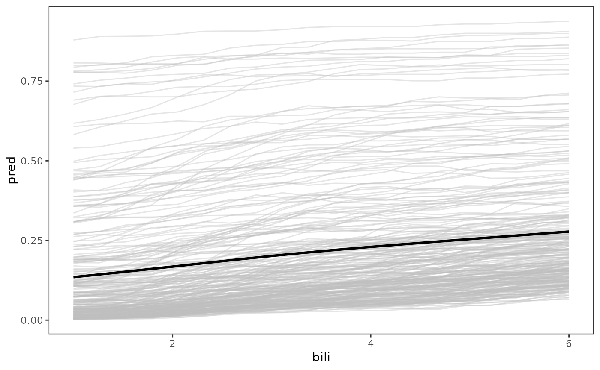

ORSF partial dependence
Usage
orsf_pd_summary(
object,
pd_data = NULL,
pd_spec,
pred_horizon = NULL,
expand_grid = TRUE,
prob_values = c(0.025, 0.5, 0.975),
prob_labels = c("lwr", "medn", "upr"),
oobag = TRUE,
risk = TRUE,
boundary_checks = TRUE
)
orsf_pd_ice(
object,
pd_data = NULL,
pd_spec,
pred_horizon = NULL,
expand_grid = TRUE,
oobag = TRUE,
risk = TRUE,
boundary_checks = TRUE
)Arguments
- object
(aorsf) An accelerated oblique random survival forest model.
- pd_data
(data frame) that will be used to compute partial dependence. If
NULL, then the training data ofobjectwill be used. If the training data were not attached toobject(seeattach_datainput in orsf), an error will be triggered.@srrstats G2.1a explicit secondary documentation of expectations on data types of all vector inputs
- pd_spec
(named list or data.frame). If
pd_specis a named list, Each item in the list should be a vector of values that will be used as points in the partial dependence function. The name of each item in the list should indicate which variable will be modified to take the corresponding values. Ifpd_specis adata.frame, columns will indicate variable names, values will indicate variable values, and partial dependence will be computed using the inputs on each row.- pred_horizon
(double) a single time or a vector of times indicating the prediction horizon. Predicted risk or survival values will indicate the probability of having an event or surviving from baseline to the prediction horizon, respectively. All
pred_horizonvalues must not exceed the maximum follow-up time inobject's training data. Also,pred_horizonvalues must be entered in ascending order.- expand_grid
(logical) if
TRUE, partial dependence will be computed at all possible combinations of inputs inpd_spec. IfFALSE, partial dependence will be computed for each variable inpd_spec, separately.- prob_values
(numeric) a vector of values between 0 and 1, indicating what quantiles will be used to summarize the partial dependence values at each set of inputs.
prob_valuesshould have the same length asprob_labels.- prob_labels
(character) a vector of labels with the same length as
prob_values, with each label indicating what the corresponding value inprob_valuesshould be labelled as in summarized outputs.prob_labelsshould have the same length asprob_values.- oobag
(logical) if
TRUE, then partial dependence will be computed using the out of bag training data. You should setoobag = TRUEif you are computing partial dependence using the training data forobject.- risk
(logical) if
TRUE, predicted risk is returned. IfFALSE, predicted survival (i.e., 1-risk) is returned.- boundary_checks
(logical) if
TRUE,pd_specwill be vetted to make sure the requested values are between the 10th and 90th percentile in the object's training data. IfFALSE, these checks are skipped.
Value
a data.table containing summarized partial dependence
values if using orsf_pd_summery or individual conditional
expectation (ICE) partial dependence if using orsf_pd_ice.
Examples
fit <- orsf(pbc_orsf, Surv(time, status) ~ . - id)
orsf_pd_summary(fit, pd_spec = list(bili = c(1,2,3,4,5,6)), pred_horizon = 1000)
#> bili mean lwr medn upr
#> 1: 1 0.1371134 0.00586136 0.05464508 0.7280524
#> 2: 2 0.1586022 0.01040731 0.07756073 0.7621136
#> 3: 3 0.1923902 0.02939148 0.11443443 0.7915491
#> 4: 4 0.2229193 0.04674486 0.14614865 0.8039803
#> 5: 5 0.2475719 0.06476276 0.16832229 0.8155852
#> 6: 6 0.2689462 0.08135699 0.19378583 0.8209867
# more points for a plot
pd_spec <- list(bili = seq(1, 6, length.out = 20))
data_ice <- orsf_pd_ice(fit, pd_spec = pd_spec, pred_horizon = c(1000))
head(data_ice)
#> id_variable id_row bili pred
#> 1: 1 1 1 0.79187060
#> 2: 1 2 1 0.02953531
#> 3: 1 3 1 0.35444497
#> 4: 1 4 1 0.21573924
#> 5: 1 5 1 0.04488051
#> 6: 1 6 1 0.02112544
library(ggplot2)
ggplot(data_ice) +
aes(x = bili, y = pred, group = id_row) +
geom_line(alpha = 0.4, color = 'grey') +
geom_smooth(aes(group = 1), color = 'black', se = FALSE) +
theme_bw() +
theme(panel.grid = element_blank())
#> `geom_smooth()` using method = 'gam' and formula 'y ~ s(x, bs = "cs")'
